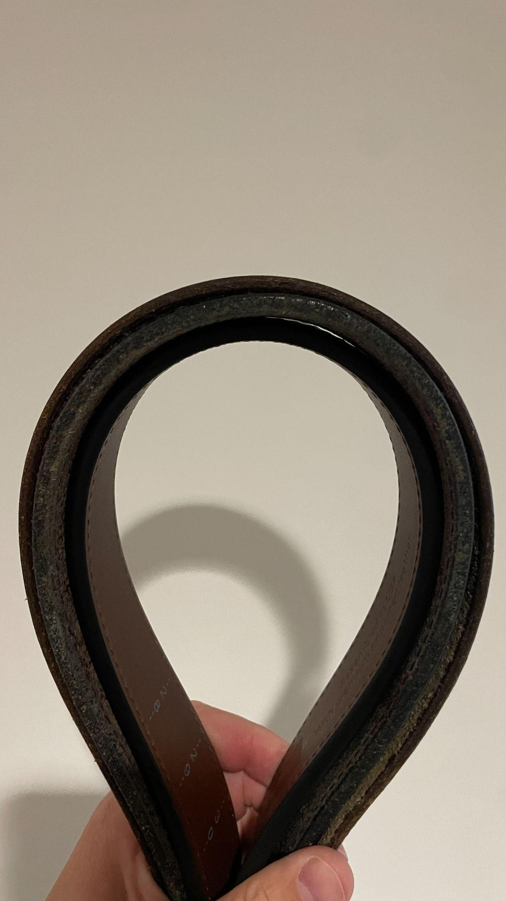
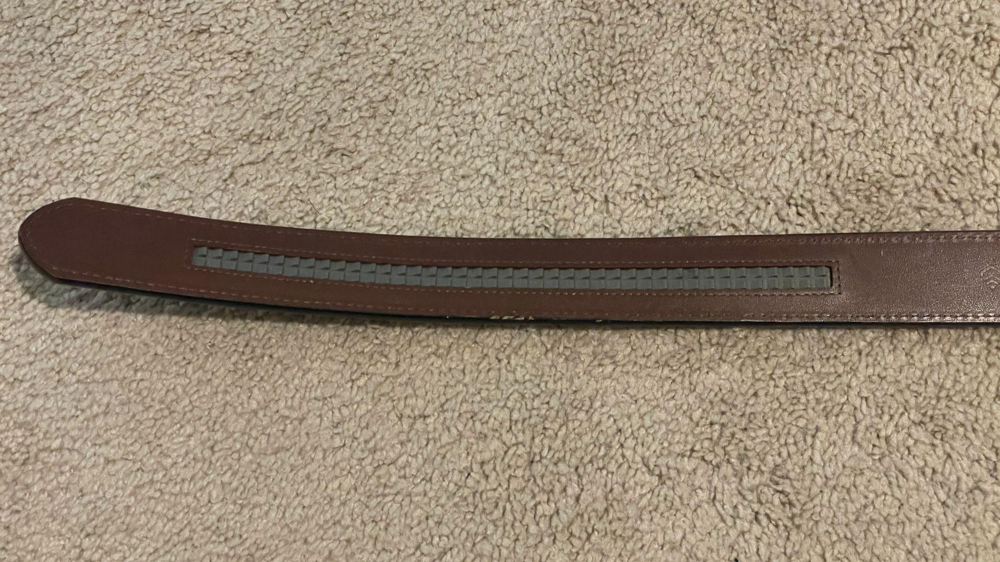
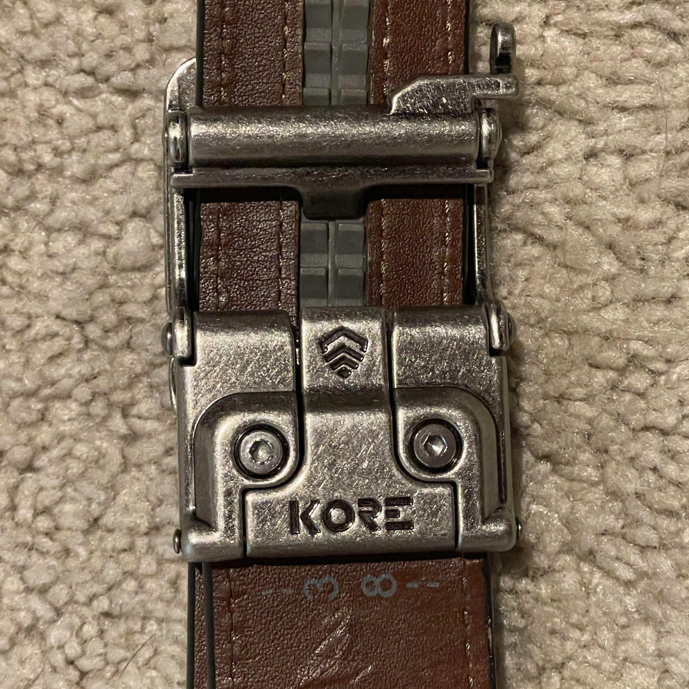
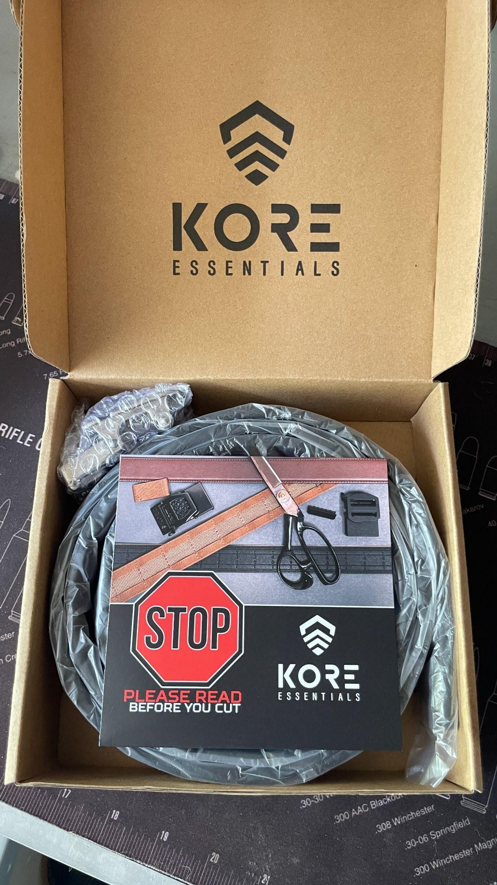
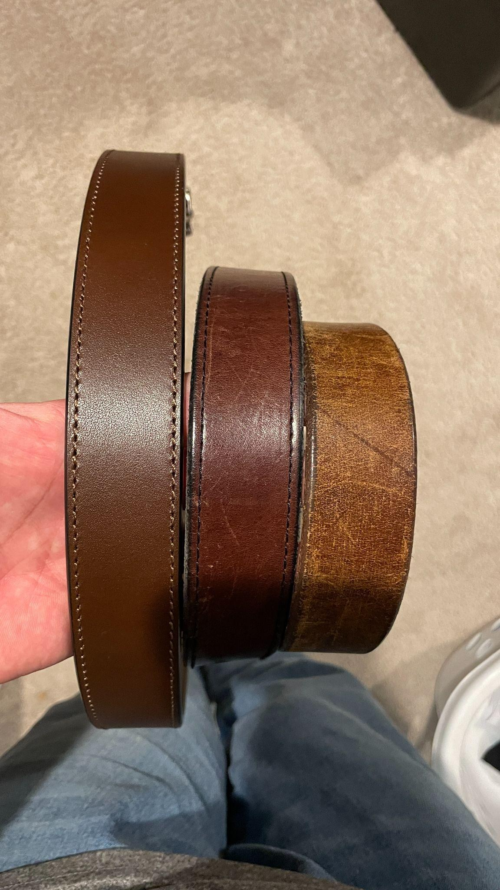

I've been wearing leather gun belts for a long time.
For roughly 15 years, an old leather belt I picked up at a gun show was my go to. It has been worn, abused, and broken in to the point where it looks like exactly what it is: a belt that has spent a long time being used.
Over those 15 years, I've added other options to the rotation, including the Hank's Gunner. So when I started wearing the Kore Essentials R1 Leather Belt, it wasn't replacing a belt that had never been tested. I already had several points of comparison.
After about a month and a half of regular use, the R1 has made a pretty damn good first impression.
What makes it interesting isn't simply that it's a leather gun belt. It's that it manages to provide the support and adjustability I want for everyday carry while looking like a traditional leather belt.
There is a time and place for a tactical belt. Sometimes that's exactly what you want. But not every day calls for one.
The R1 is for those days.
A Leather Belt That Can Actually Carry Gear
The first thing that stands out about the R1 is how substantial it feels.
Kore builds the Ranch series around two layers of full grain leather with a reinforced Power Core center. The R1 is 1.5 inches wide and 8mm thick, with the internal reinforcement providing the rigidity needed to support a full sized firearm and other equipment. Kore rates the belt for up to 10 pounds of gear.

You can see that construction clearly when you look at the edge of the belt.
This isn't a thin leather fashion belt that happens to have a stronger buckle attached to it. There's some serious structure here, and that's exactly what you want when you're putting additional weight on your waist.
I've been carrying my normal everyday setup on the R1, including a pistol, knife, multitool, flashlight, and other EDC items.
That's a good test for a belt.
A belt that isn't sufficiently rigid will eventually reveal itself. You'll get sagging, rolling, shifting equipment, or simply the feeling that everything hanging from your waist is pulling the belt out of shape.
I haven't experienced that with the R1.
It feels substantial without feeling like I'm wearing a piece of tactical equipment around my waist.
And that distinction is important.
Not Everything Has to Look Tactical
I don't think tactical belts deserve the criticism they sometimes get.
Kore Essentials makes them, and I'd actually like to test some of those belts myself. If your everyday activities involve a range, training, duty gear, or other situations where a tactical belt makes sense, there's a good reason to use one.
But sometimes you want the functionality without the appearance.
That's where the R1 makes sense.
Put it on with jeans and a T shirt and it looks like a traditional leather belt. Wear it with something a little nicer and it doesn't look out of place. Meanwhile, you've got a belt underneath your clothes that is capable of supporting a substantial EDC load.
That's a useful combination.
I also don't believe in having one belt that has to do everything. I like having options, and the R1 has given me another option that fills a role my more overtly purpose built belts don't.
It also makes me interested in trying more of Kore's lineup. The R1 has shown me what the company can do when it takes the functionality of a serious EDC belt and puts it into a more traditional leather package.
The Difference Is in the Adjustment
The feature that I've probably appreciated most during the time I've had the R1 is the micro adjustment system.
Traditional belts generally give you holes spaced roughly an inch apart. That works, but it leaves you with a familiar problem: one hole is too loose and the next one is too tight.
Your waist doesn't necessarily feel the same every day, either.
Maybe you've eaten a big lunch. Maybe you're sitting at a desk all afternoon. Maybe you're moving around all day. Maybe you've added or removed something from your EDC.

The R1's ratcheting track gives you more than 40 adjustment positions in quarter inch increments.
That means you can actually dial in the fit instead of settling for whatever happens to be closest.
And that becomes especially useful when you're carrying gear.
If I remove something from my belt, I can simply tighten it back up. If I add something, I can give myself a little more room. I'm not limited to making an adjustment that changes the fit by an inch at a time.
It sounds like a small thing until you spend some time with it.
Then going back to a traditional belt starts to feel unnecessarily restrictive.
Consistency Matters for Carry
There is another benefit to that adjustability when you're carrying a pistol.
I want my holster to stay where I put it.

Being able to fine tune the belt means I can get the tension where I want it without simply cranking the belt down until it's uncomfortable. That helps reduce unnecessary movement of the holster and keeps my setup more consistent throughout the day.
For someone who carries regularly, consistency matters.
If your holster is moving around, your starting position changes. If the position of the pistol changes, your hand has to find a slightly different position when you establish your grip.
Being able to keep the belt tension and holster position consistent helps me establish the same master grip and draw stroke each time I practice.
I'm not saying a belt is going to make you a better shooter. That's still on you and your training.
What the belt can do is give you a more consistent platform to work from.
And the R1 lets me get that consistency without wearing the belt unnecessarily tight.
That's an important distinction. Comfortable and secure aren't mutually exclusive.
Cut to Fit, Then Fine Tune
The R1 takes a slightly different approach to sizing than simply ordering a belt based on your pant size.
It's cut to fit.

The back of the belt has measurement markings that show where to measure and where to cut the belt. Once you've determined the appropriate length, you cut the belt and install the buckle using the included hardware.
It might sound a little intimidating if you've never owned a cut to fit belt, but the process is straightforward as long as you follow the instructions and take your time.
Once it's cut, the adjustment track gives you the flexibility you need for day to day changes.
So the sizing process gets you into the right range, and the micro adjustment system handles everything after that.
That's a pretty sensible approach.
Six Weeks of Wear
One thing I don't want to do is pretend that a month and a half constitutes a long term durability test.
It doesn't.
My old gun show belt has 15 years behind it. The Hank's Gunner has also spent time in my rotation. Those belts have accumulated considerably more wear than the R1 has.
But six weeks of regular use is enough to see how something is holding up.
So far, the R1 looks remarkably close to new.

I've worn it regularly, including while carrying my normal EDC load, and I haven't seen the kind of wear or deformation that would make me question its durability.
In fact, that's part of what I'm most interested in watching over the next year.
Because while I appreciate that it still looks nearly new, I don't necessarily want it to stay that way forever.
It's leather.
I want to see it develop some character.
My old belt has 15 years of history written into the leather. You can see the difference immediately when it's sitting next to the R1. The Hank's Gunner provides another useful comparison, showing how different leather belts can develop their own appearance and feel over time.
The R1 is at the beginning of that process.
I'm looking forward to seeing what kind of patina develops as I continue wearing it.
Made in the USA
The other thing I appreciate about the R1 is that Kore Essentials manufactures its Ranch belts in the United States.
That matters to me.
When I have the option to support a company manufacturing a product here in the U.S., I want to do that. Manufacturing supports far more than the people directly working on the product. It also creates work throughout the supply chain, from materials and production to shipping and logistics.
Those are jobs for your neighbors and family.
I don't think "Made in the USA" automatically makes a product good. The product still has to earn its place through quality, performance, and value.
After six weeks with the R1, I think it has.
The Kore Essentials R1 has found a pretty comfortable spot in my belt rotation. It isn't replacing every other belt I own, and I wouldn't want it to. What it gives me is a leather belt that can support a serious everyday carry load without looking like a tactical belt, and a cut to fit sizing process paired with a quarter inch micro adjustable track that lets me dial in the fit as my load changes throughout the day.
That adjustability has been particularly useful with my EDC. I can make small changes as my load changes, keep my holster more consistent, and avoid having to wear the belt unnecessarily tight.
And after about a month and a half of regular use, it still looks remarkably close to new.
That's a pretty good start.
I also appreciate that the Ranch series is manufactured in the USA. Supporting American manufacturing is important to me, particularly when the product I'm buying is something I'm going to use regularly and expect to keep for a long time.
It's still too early for me to tell you what the R1 will look like after five or ten years. My 15 year old belt has earned the right to show its age. The R1 hasn't had that opportunity yet.
But I've thoroughly enjoyed wearing it during the relatively short time I've had it.
Now I'm looking forward to seeing what happens next. I want to see the leather develop its patina, I want to see how the belt holds up after another year of everyday carry, and frankly, I'm interested in seeing what else Kore Essentials can do.
Because if the R1 is any indication, there may be room for a few more Kore belts in my rotation.